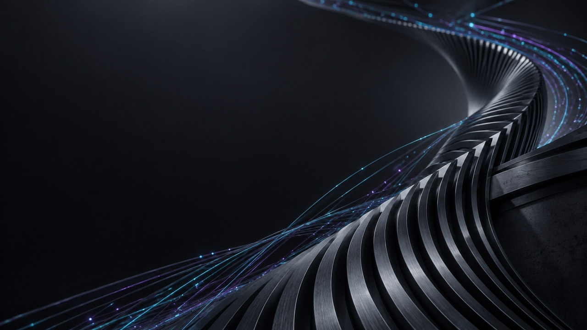
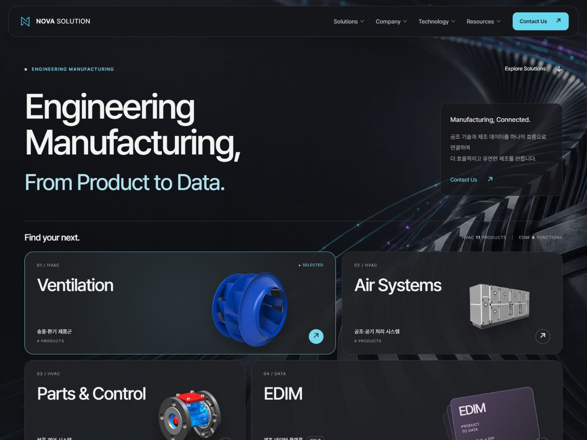
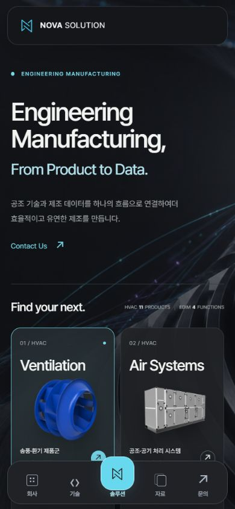
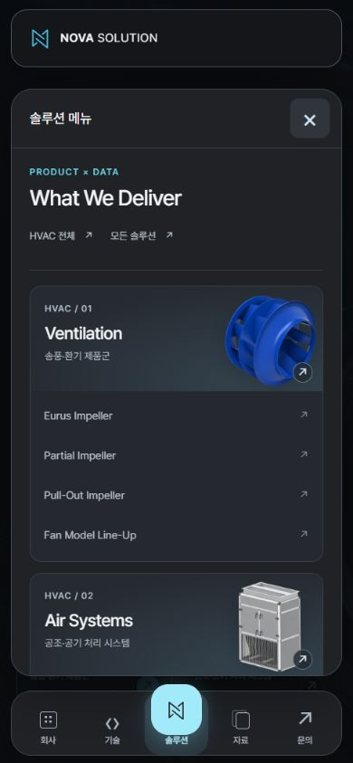
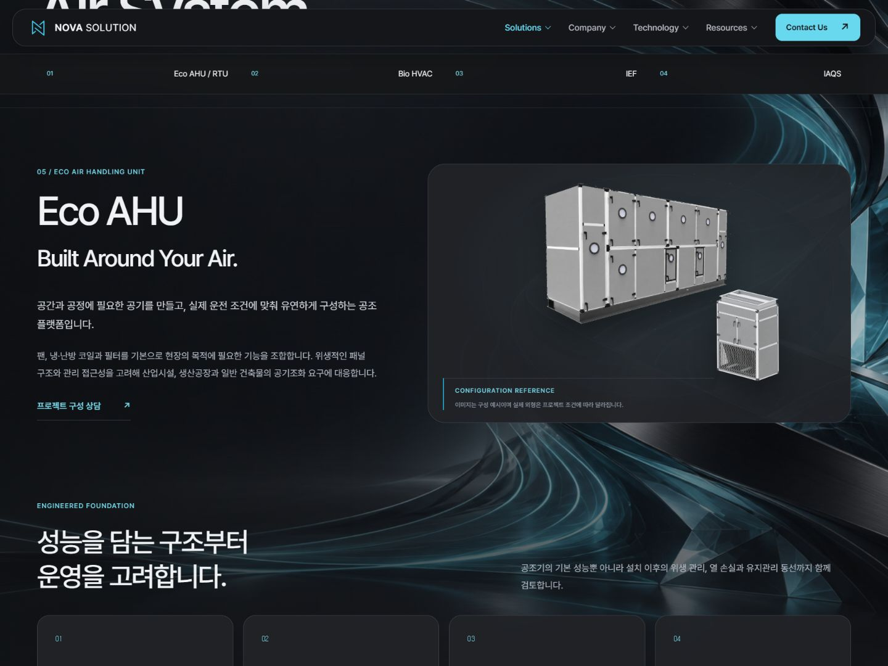

NOVA SOLUTION / PRISM PHASE 02 / 2026.10.09
Engineering Manufacturing,
From Product to Data.
메인의 추상 엔지니어링 배경, 섹션 전환, 전체 11페이지의 프리즘 스타일과 모바일 하단 탐색을 로컬 소스에 구현했습니다.
실제 화면

모바일 탐색


페이지별 적용
| Home | 제목 교체, 6종 배경 전환, 제품 15개 선택과 240ms 전환 효과. |
|---|---|
| Solutions · HVAC | 제품 카드·필터·공통 배경 통합. |
| 제품 상세 3페이지 | 제품 목차, 사양·성능 카드, 팬 모델·CLT 3D, AHU 설명 재배치. 데이터 화면은 운영 예시로 표시. |
| EDIM · Technology | 보라색 모듈 표현, 기술 설명·개발 상태 보존. |
| Company | 5개 모달, 지도, 키보드 포커스·배경 잠금·뒤로/앞으로 가기 처리. |
| Resources · Contact | 준비 상태 보존, 폼 가독성 개선, 문의 유형별 선택, JavaScript 없는 제품 옵션 제공. |

배경 6종 및 제작 기록
실제 생성 해상도: 1672 × 941px
제작 목표는 가로 3840px였으나 내장 image_gen의 실제 출력은 1672 × 941px였습니다. 원본 범위에서 640·1280·1672px와 모바일용 640 × 900px JPG를 내보냈으며 업스케일하지 않았습니다. 배포용은 총 24개 파일입니다.
sRGB 픽셀 · progressive JPEG · 품질 88 · 불필요한 메타데이터 제거. 원본 PNG와 사용한 프롬프트는 함께 보관합니다. 생성 이미지는 장식용 추상 이미지입니다.
생성 도구·전체 프롬프트·해상도·용량·해시 기록


앞으로 유지할 인터랙션 규칙
| 배경 | 각 메인 섹션 시작점이 화면 높이의 45%에 도달하면 700ms ease-in-out 교차 전환. 두 레이어 사용, 디코딩 후 표시, 인접 장면 미리 로드, 실패 시 차콜 배경. |
|---|---|
| 헤더 | 24px 초과에서 20% 축소, 8px 이내에서 복원. 76→60.8px / 64→51.2px, 280ms. 공통 높이 변수로 메뉴·목차 위치 연결. |
| 모바일 | 960px 이하에서 하단 5버튼. 중앙 56px 솔루션 아이콘이 8px 돌출. safe-area·본문 여백·키보드 입력 처리. 열려 있는 패널과 하단 메뉴를 한 포커스 영역으로 유지. |
| 공통 모션 | --motion-ease: ease-in-out. 버튼·선택 180–240ms, 메뉴·모달 320ms. CSS와 JavaScript 동일 곡선. 네이티브 스크롤과 직접 지도·모델 조작은 유지. |
| 동작 줄이기 | 배경·CSS 효과 즉시 적용, 카운터 최종값, 3D 자동 회전 중지, 지도 효과 생략. |
| 스크롤 | novascroll의 사용자 활동 후 1600ms 숨김 규칙 유지. 스크롤 이동 자체에 새 보간·가로채기 없음. |
검증 결과
- 11페이지 × 320·390·768·960·961·1440px = 66조합 검사: 가로 넘침·깨진 이미지 없음. 최종 보정 후 상세 8페이지의 모바일 16조합 재검사 통과.
- 원문 텍스트 1,285개, 기존 링크·앵커·제품 자산·모델·폼 필드·기능 hook·SVG 2개 유지. 보존 스냅샷 62개 해시 일치.
- 메인 15개 선택, 팬 3개 모델, CLT 2모델 × 3시점, 드래그·확대, 문의 선택지 11/6/3개 확인. 문의 폼 실제 제출 없음.
- 모바일 패널 4종, Tab 순환·Escape·초점 복귀, 회사 모달 인계, 5모달 및 Back/Forward 확인. 헤더 실제 높이 76/60.8px와 64/51.2px 확인.
- 실제 페이지를 스크립트 차단 iframe에서 열어 11페이지의 본문·기본 메뉴와 팬 사양 접근 확인.
- 배경 controller Node VM 6개 테스트: 45% 경계, 역방향·빠른 이동, 오래된 로딩 결과 무시, 실패 복구, reduced-motion, 반응형 자산 선택.
- 배포 빌드와 안전성 회귀 검사 통과. 최상위 HTML 11개, 공통 자산 11개, 참조 자산 56개 포함. docs·원본 PNG는 배포 대상에서 제외.
반응형 검사는 브라우저 뷰포트 기준입니다. 실제 iOS/Android 기기는 시험하지 않았습니다. 가상 키보드는 입력 초점과 뷰포트 높이 축소로 검증했습니다. 동작 줄이기는 controller 테스트와 CSS·나머지 모션 소스 검토로 확인했으며 OS 설정은 변경하지 않았습니다.